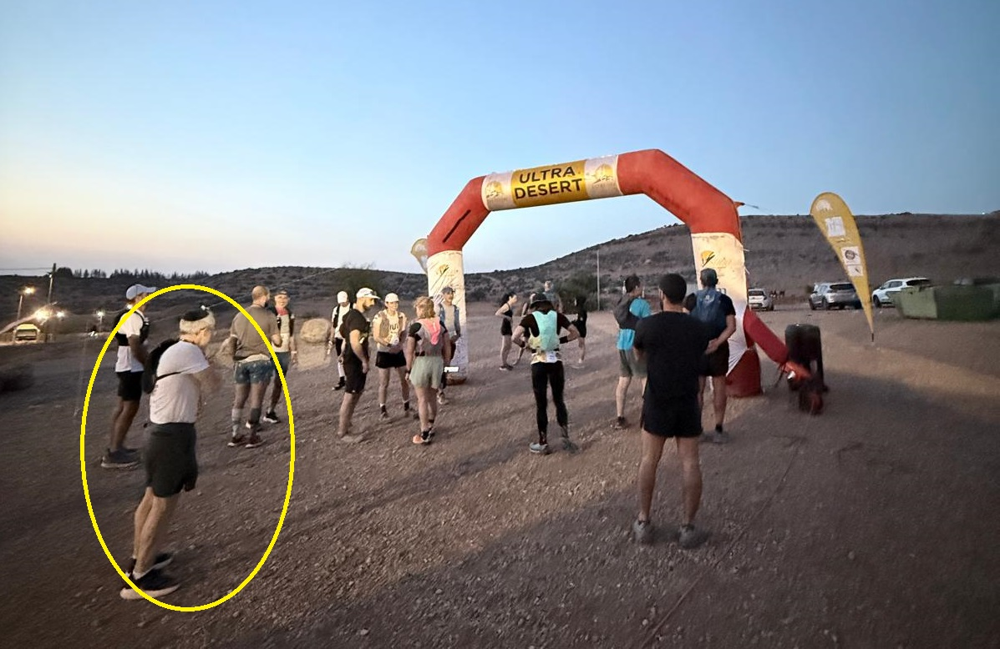
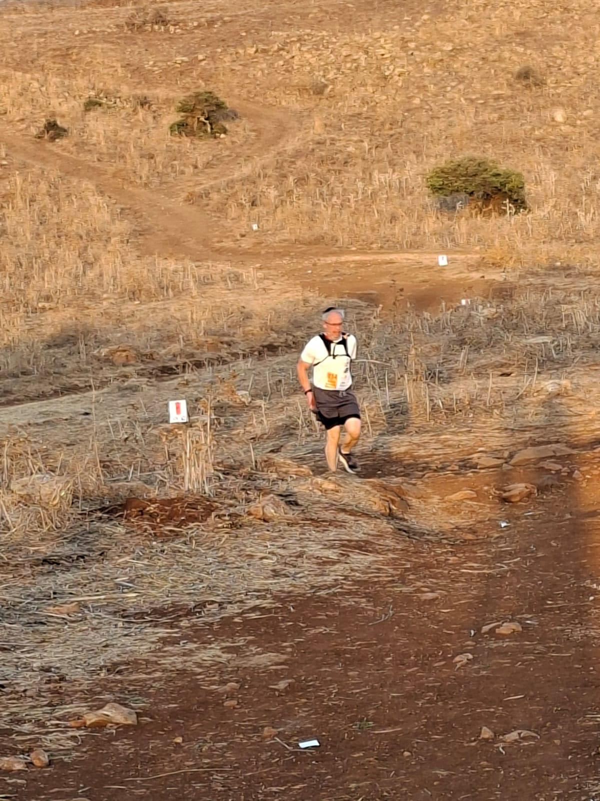
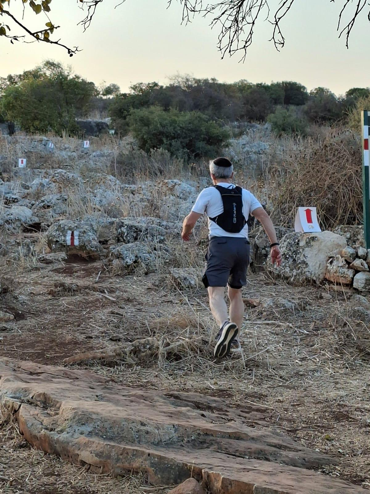
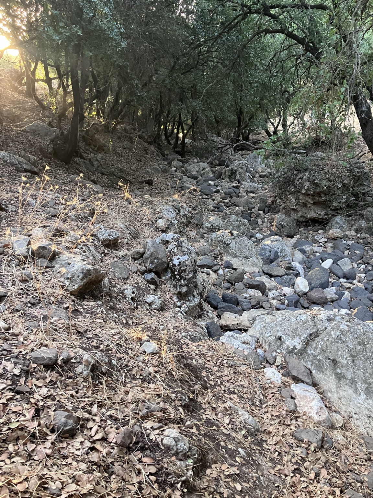
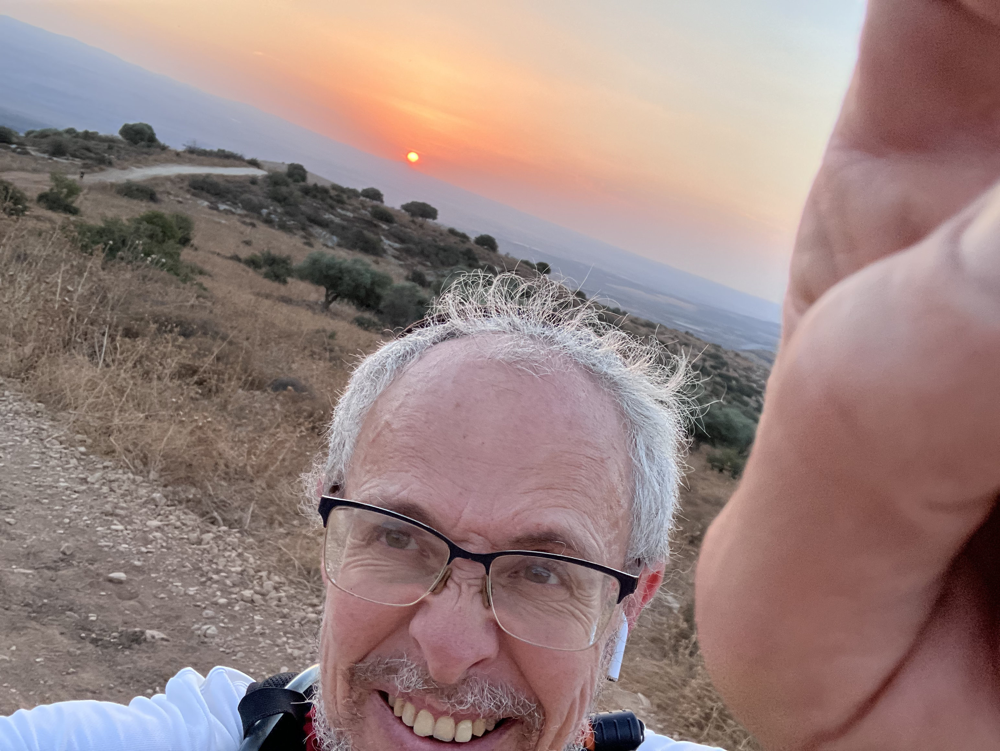
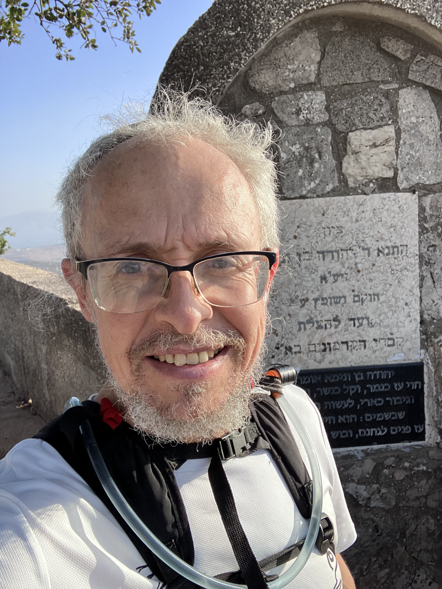
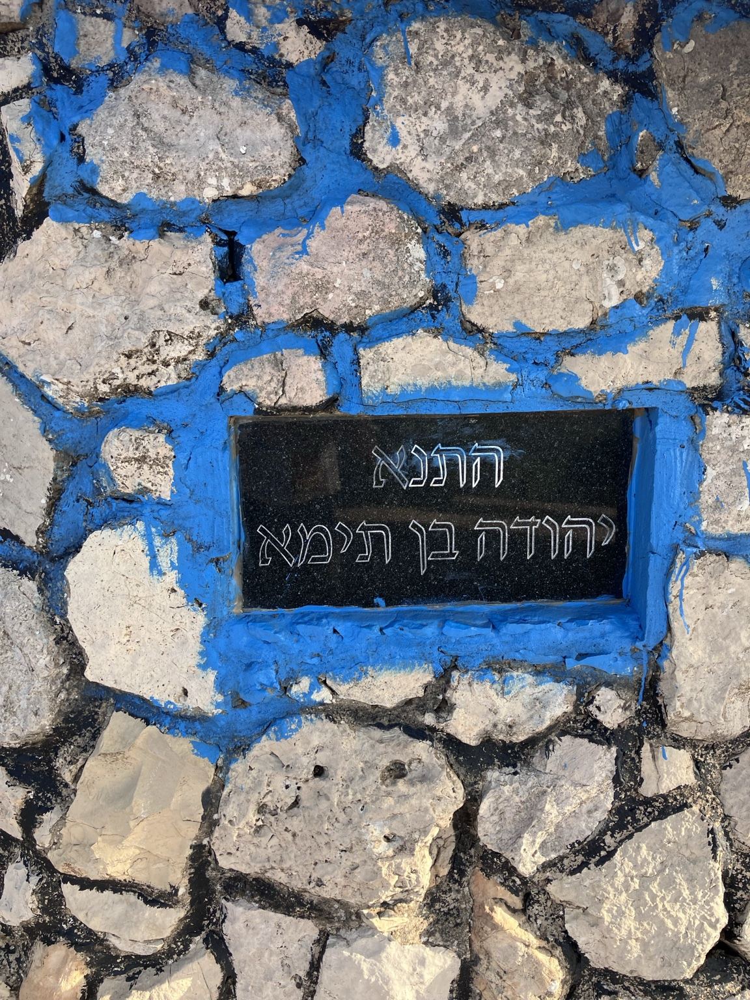
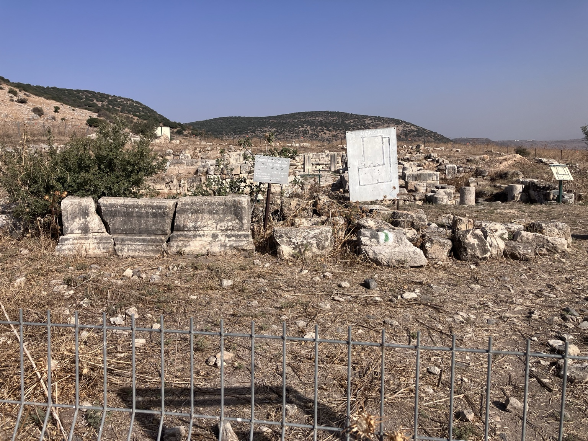
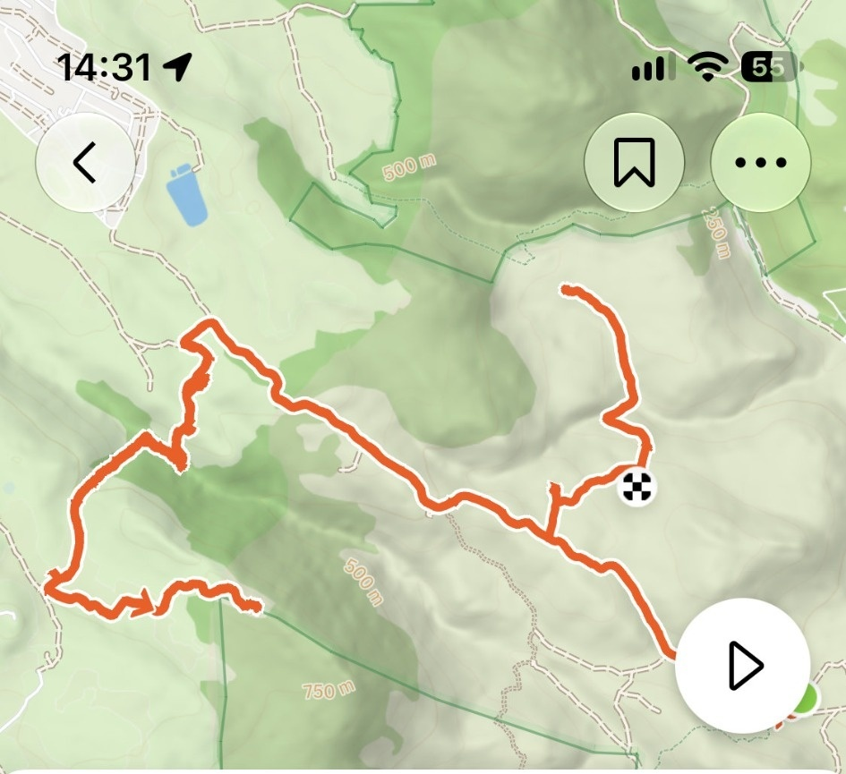
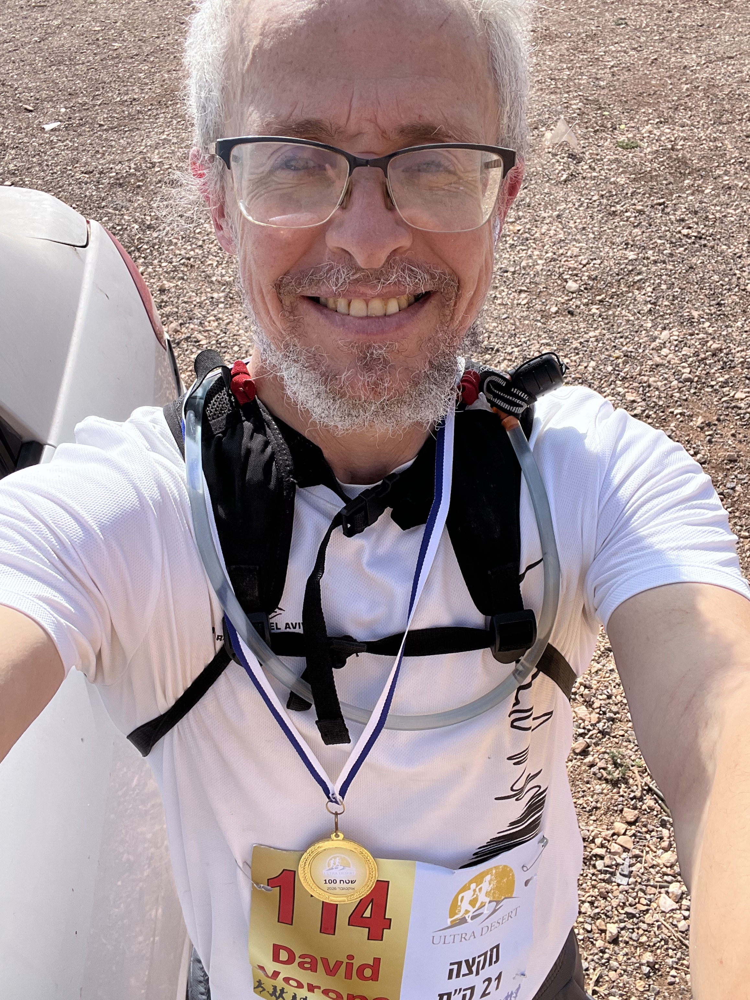

ההרפתקה מתחילה
זה לא היה חצי מרתון רגיל. לפניי חיכו 23 קילומטרים של עליות תלולות, שבילים סלעיים, ירידות מאתגרות ונופים בלתי נשכחים.
ב־23 באוקטובר 2026 השתתפתי במרוץ שטח באזור 100, שטח אימונים צבאי בצפון ישראל. זה היה אחד המרוצים הקשים והבלתי נשכחים בחיי.


לפני הזריחה
יצאתי מהבית מוקדם מאוד בבוקר ונסעתי כשעתיים עד למקום המרוץ. הגעתי בסביבות השעה חמש, כשעדיין היה חשוך.
הזינוק תוכנן לשעה שש בבוקר. אבל אזור 100 הוא שטח אימונים צבאי פעיל, וחיילים התאמנו בקרבת מקום. נאלצנו להמתין לאישור להיכנס לשטח.
לבסוף יצאנו לדרך בסביבות 6:20–6:30, בדיוק כשהחל להאיר.




הקילומטרים הראשונים
החלק הראשון של המרוץ עבר בדרכי עפר בין הגבעות. ככל שהשמש עלתה, הנוף הלך ונעשה יפה יותר.
הריצה בהרים בשעות הבוקר המוקדמות הייתה חוויה נפלאה. האוויר היה צח, הנופים מרהיבים, והתרגשתי לקראת ההרפתקה שלפניי.


האתגר האמיתי
ככל שהמרוץ התקדם, השטח נעשה קשה יותר. חלק מהעליות היו תלולות וסלעיות עד כדי כך שאי אפשר היה לרוץ בהן. נאלצתי ללכת בזהירות, ולעיתים להיעזר בידיים כדי לטפס בין הסלעים.
הירידות היו מאתגרות אף יותר. אבנים משוחררות הפכו את השבילים לחלקלקים, וכל צעד דרש תשומת לב. לפעמים התקשיתי גם למצוא את המשך המסלול.
הצלחתי לעבור את הקטעים הקשים האלה בלי ליפול אפילו פעם אחת.





רגע רוחני
אחד הרגעים המיוחדים במרוץ היה כשהגעתי לקברו של רבי יהודה בן תימא, מחכמי ישראל.
הקבר נמצא בנקודה הגבוהה ביותר במסלול. עצרתי שם לזמן קצר כדי להתפלל, לשתות מעט מים וליהנות מהנוף המרהיב.
עבורי זה היה יותר ממרוץ ריצה — זו הייתה גם חוויה רוחנית בעלת משמעות.


המסלול והתוצאות שלי
אורך המסלול היה 23.25 קילומטרים, עם טיפוס מצטבר של 911 מטרים. בדרך היו דרכי עפר, שבילי הרים צרים, עליות תלולות וירידות סלעיות קשות.
זמן התנועה שלי היה 3 שעות, 38 דקות ו־28 שניות. הקצב הממוצע היה 9 דקות ו־24 שניות לקילומטר, והדופק הממוצע היה 131 פעימות בדקה.
אבל המספרים מספרים רק חלק מהסיפור. האתגר האמיתי היה השטח ההררי הקשה.

קו הסיום
אחרי יותר משלוש שעות וחצי של ריצה, טיפוס וירידה זהירה בשבילים סלעיים, הגעתי סוף סוף לקו הסיום.
הייתי עייף, אבל מאושר מאוד. השלמתי מרוץ שטח מאתגר בין הרים יפים וחוויתי משהו מיוחד באמת.
המרוץ הזה הזכיר לי שהריצה אינה רק עניין של מהירות ותוצאות. לפעמים הפרס הגדול ביותר הוא ההרפתקה עצמה.